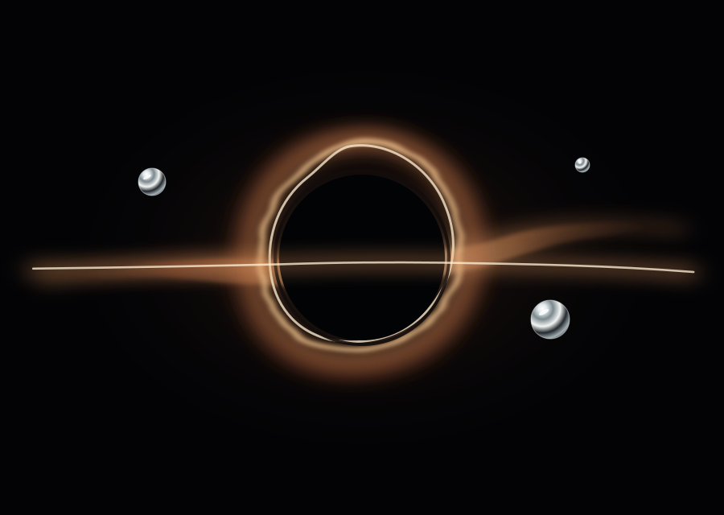

Procedural accretion
A custom WebGL shader layers procedural noise, color, and radial shading across a mesh to create the moving accretion flow. The inner disk advances faster in the visual model to suggest more rapid orbital motion near the center.
01NVOR TECH / CURRENT EXPERIMENT
A closer look at NVOR Tech's interactive 3D black-hole scene: its animated accretion disk, three reflective orbiting worlds, and the controls that let you explore them.
REAL-TIME WEBGL · THREE.JS · CUSTOM SHADERS

02 / THE EXPERIENCE
The scene places a dark central horizon inside a luminous accretion disk. Around it, Luma, Nyx, and Veyra travel on separate orbit paths. Each world has a reflective, iridescent surface and a subtle animated ripple that shifts its highlights as it turns.
Choose a planet card on the home page to bring that orbit into focus. The motion control pauses the animation, and the scene also responds to reduced-motion preferences.
03 / HOW IT IS BUILT
The scene is rendered in the browser with Three.js and WebGL. Its motion, color, and surface detail come from the project’s own shader code, with controls designed for direct exploration.
A custom WebGL shader layers procedural noise, color, and radial shading across a mesh to create the moving accretion flow. The inner disk advances faster in the visual model to suggest more rapid orbital motion near the center.
The three planets are 3D meshes rendered with Three.js physical materials, colored lighting, iridescence, and a shader-driven surface ripple. Separate orbit groups let each world move and focus independently.
Visitors can focus Luma, Nyx, or Veyra from the orbit cards and pause the scene's motion. The experience is designed to run directly in a modern browser using WebGL.
ABOUT NVOR TECH
NVOR Tech is an evolving web project exploring real-time 3D graphics and interaction. The black-hole scene is its current public experiment.
View the project source on GitHub